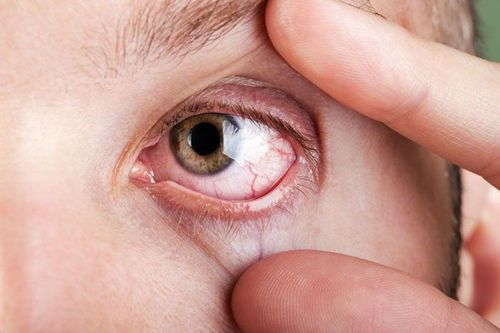
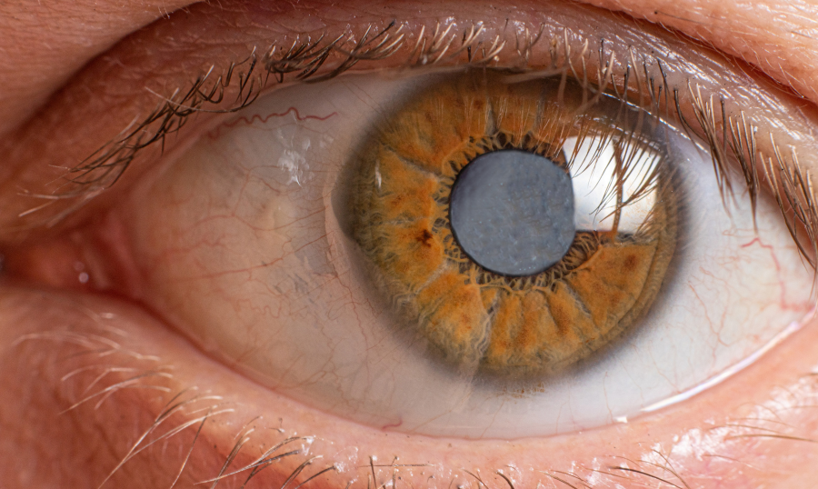

Home
About IrisCheck
IrisCheck is a machine learning model that is focused on detecting 4 different diseases based on computer vision & machine learning in eye imaging, as an attempt to make the process of screening easier & more accesible with just a click of a button!
-This Model was fully trained on google teachable machine, Website programmed on CodeSandbox & Published on Github.
Jaundice
A visible yellowing of the skin and the whites of the eyes (called the sclera). This happens when there is a high buildup of a yellow pigment called bilirubin in the bloodstream, which is typically a sign that the liver, gallbladder, or pancreas isn't functioning properly.
Anemia
A medical condition that occurs when your blood has a lower-than-normal amount of healthy red blood cells or hemoglobin. Because red blood cells carry oxygen throughout the body, a lack of them causes fatigue and weakness. In the eyes, it is often spotted by a distinct paleness inside the lower eyelid.

Cataract
A progressive, painless clouding of the eye's natural lens, which sits behind the iris and pupil. As proteins in the lens clump together over time, they block light from passing through cleanly. This leads to blurry or misty vision and can eventually cause the pupil to look milky or cloudy.

Pinkeye (Conjunctivitis)
An inflammation or infection of the clear membrane that covers the white part of your eyeball and lines your eyelids. It dilates the tiny blood vessels in the eye, causing the characteristic redness, alongside irritation, itchiness, and a gritty feeling or discharge.